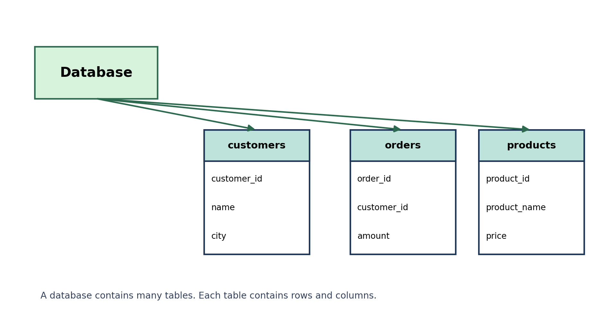
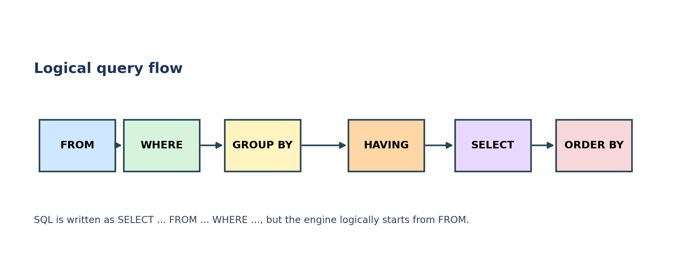
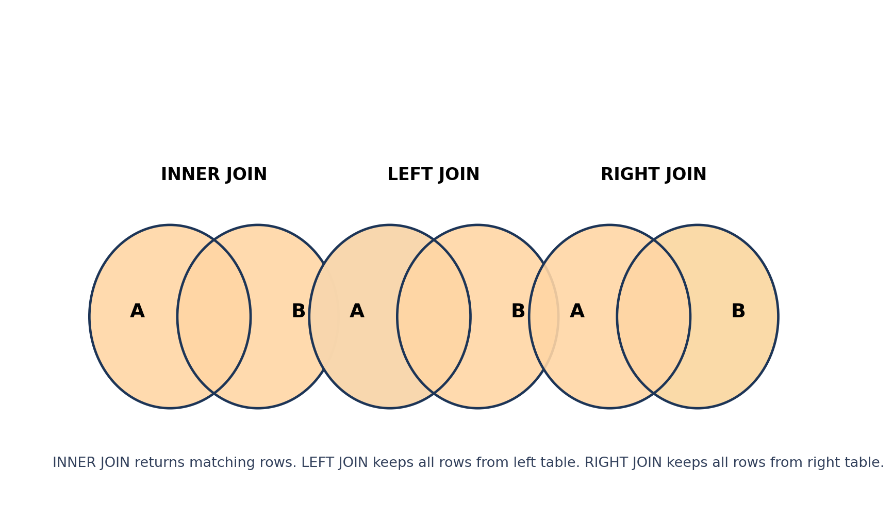

| Term | Simple definition | Example |
|---|---|---|
| Data | Raw facts or information | Name, age, salary, order amount |
| Database | An organized collection of data | A system storing customers, orders, products |
| DBMS | Software used to create, manage, and query databases | MySQL, PostgreSQL, Oracle, SQL Server |
| RDBMS | A DBMS that stores data in related tables | Customer table connected to orders table |
| SQL | Structured Query Language used to talk to a relational database | SELECT * FROM customers; |
Foundation
What is data, database, DBMS, RDBMS, and SQL?
Before writing queries, it helps to understand the basic words clearly because almost every interview starts here.
| Term | Meaning |
|---|---|
| Table | Collection of related rows and columns |
| Row / Record | One complete entry in a table |
| Column / Field | One attribute stored for every row |
| Schema | Structure or design of the database |
| Query | Instruction written in SQL |
| NULL | Missing or unknown value |
customers
+-------------+--------+-----------+
| customer_id | name | city |
+-------------+--------+-----------+
| 1 | Vinod | Mysore |
| 2 | Ravi | Bengaluru |
+-------------+--------+-----------+

FROM.
Command Types
Major families of SQL commands
SQL is easier when you group commands by job. One command family changes structure, another changes data, another controls transactions.
| Category | Full form | Main purpose | Common commands |
|---|---|---|---|
| DDL | Data Definition Language | Define or change database structure | CREATE, ALTER, DROP, TRUNCATE, RENAME |
| DML | Data Manipulation Language | Insert, change, or delete data | INSERT, UPDATE, DELETE |
| DQL | Data Query Language | Read data | SELECT |
| DCL | Data Control Language | Permission and access control | GRANT, REVOKE |
| TCL | Transaction Control Language | Manage transaction boundaries | COMMIT, ROLLBACK, SAVEPOINT |
Creating database and table
CREATE DATABASE shop_db;
USE shop_db;
CREATE TABLE customers (
customer_id INT PRIMARY KEY,
name VARCHAR(50),
city VARCHAR(40)
);Insert, update, and delete rows
INSERT INTO customers VALUES (1, 'Vinod', 'Mysore');
UPDATE customers
SET city = 'Bengaluru'
WHERE customer_id = 1;
DELETE FROM customers
WHERE customer_id = 1;Schema Design
Keys, constraints, and table design basics
Good SQL starts with good table design. Constraints protect data quality before analysis even begins.
| Key type | Meaning | Example |
|---|---|---|
| Primary Key | Uniquely identifies each row | customer_id |
| Foreign Key | Connects one table to another | orders.customer_id references customers.customer_id |
| Candidate Key | Column that can uniquely identify rows | Email, employee code |
| Composite Key | Unique key made from more than one column | (student_id, course_id) |
| Constraint | Purpose |
|---|---|
PRIMARY KEY |
Unique and not null identifier |
FOREIGN KEY |
Maintains relationship between tables |
NOT NULL |
Prevents missing values in important columns |
UNIQUE |
Prevents duplicate values |
DEFAULT |
Gives automatic value if none is provided |
CHECK |
Applies custom rule to values |
Simple customers and orders schema
CREATE TABLE customers (
customer_id INT PRIMARY KEY AUTO_INCREMENT,
name VARCHAR(50) NOT NULL,
email VARCHAR(100) UNIQUE,
city VARCHAR(40),
created_at TIMESTAMP DEFAULT CURRENT_TIMESTAMP
);
CREATE TABLE orders (
order_id INT PRIMARY KEY AUTO_INCREMENT,
customer_id INT NOT NULL,
amount DECIMAL(10, 2) CHECK (amount >= 0),
order_date DATE,
FOREIGN KEY (customer_id) REFERENCES customers(customer_id)
);Reading Data
SELECT, filtering, sorting, and basic query building
SELECT is the most used SQL command because analysts spend a lot of time reading, filtering, and summarizing data.
SELECT
Choose columns to read
WHERE
Filter rows by condition
ORDER BY
Sort result
LIMIT
Keep only top rows
DISTINCT
Remove duplicates
AS
Give alias to column
SELECT * FROM customers;
SELECT name, city
FROM customers;
SELECT name AS customer_name, city AS customer_city
FROM customers;
SELECT DISTINCT city
FROM customers;Definition: SELECT retrieves data from one or more tables.
SELECT *
FROM orders
WHERE amount > 5000;
SELECT *
FROM customers
WHERE city = 'Mysore';Definition: WHERE filters rows before the result is returned.
SELECT *
FROM orders
WHERE amount > 1000
AND status = 'Delivered';
SELECT *
FROM customers
WHERE city = 'Mysore'
OR city = 'Bengaluru';
SELECT *
FROM users
WHERE NOT city = 'Delhi';| Operator | Meaning |
|---|---|
AND |
Both conditions must be true |
OR |
At least one condition must be true |
NOT |
Reverse the condition |
SELECT *
FROM books
WHERE price BETWEEN 300 AND 700;
SELECT *
FROM books
WHERE book_id IN ('C0001', 'F0001', 'T0002');
SELECT *
FROM authors
WHERE author_name LIKE 'A%';
SELECT *
FROM employees
WHERE phone_no IS NULL;| Operator | Use |
|---|---|
BETWEEN |
Range check |
IN |
Match from a list |
LIKE |
Pattern matching |
IS NULL |
Check missing values |
SELECT *
FROM employees
ORDER BY first_name DESC;
SELECT *
FROM orders
ORDER BY amount DESC
LIMIT 5;ASCmeans ascending order.DESCmeans descending order.LIMITis useful for top-N analysis.
SELECT city, COUNT(*) AS total_customers
FROM customers
WHERE city IS NOT NULL
GROUP BY city
HAVING COUNT(*) > 5
ORDER BY total_customers DESC;
Remember: SQL is written as SELECT ... FROM ... WHERE ..., but logically it starts from
FROM, then WHERE, then GROUP BY, then HAVING, then SELECT, then ORDER BY.
Analysis Core
Aggregate functions, GROUP BY, HAVING, and common functions
This is the part of SQL most analysts use for summary reporting and business questions.
| Function | Meaning |
|---|---|
COUNT() |
Counts rows or non-null values |
SUM() |
Adds numeric values |
AVG() |
Calculates average |
MAX() |
Largest value |
MIN() |
Smallest value |
SELECT COUNT(*) FROM orders;
SELECT SUM(amount) FROM orders;
SELECT AVG(amount) FROM orders;
SELECT MAX(amount), MIN(amount) FROM orders;Definition: GROUP BY collects rows with the same value together so aggregate functions can be applied per group.
SELECT city, COUNT(*) AS total_customers
FROM customers
GROUP BY city;
SELECT branch_id, SUM(balance) AS total_deposit
FROM depositor
GROUP BY branch_id;Think like this: first form groups, then calculate one summary for each group.
Definition: HAVING filters groups after aggregation. WHERE filters rows before grouping.
SELECT branch_id, SUM(balance) AS total_loan
FROM loan
GROUP BY branch_id
HAVING SUM(balance) > 50000;| Clause | Filters |
|---|---|
WHERE |
Rows |
HAVING |
Groups |
SELECT UPPER(name), LOWER(city) FROM customers;
SELECT LENGTH(name) FROM customers;
SELECT ROUND(amount, 2) FROM orders;
SELECT NOW(), CURDATE(), YEAR(order_date) FROM orders;
SELECT CONCAT(first_name, ' ', last_name) AS full_name FROM employees;| Type | Examples |
|---|---|
| String | UPPER, LOWER, LENGTH, CONCAT, SUBSTRING, REPLACE |
| Numeric | ROUND, ABS, MOD, CEIL, FLOOR |
| Date | CURDATE, NOW, YEAR, MONTH, DATEDIFF |
Relationships
Joins: the heart of relational SQL
Joins are used when the data you need lives across multiple tables. This is one of the most important SQL topics.
| Join type | What it returns | Common use |
|---|---|---|
| INNER JOIN | Only matching rows from both tables | Customers who actually placed orders |
| LEFT JOIN | All rows from left table plus matches from right table | All customers, even if they placed no order |
| RIGHT JOIN | All rows from right table plus matches from left table | All order records, even if customer details are missing |
| CROSS JOIN | Every row from A combined with every row from B | All combinations |
| SELF JOIN | Table joined with itself | Employee and manager relationships |
SELECT c.name, o.order_id, o.amount
FROM customers c
INNER JOIN orders o
ON c.customer_id = o.customer_id;Use it when: you want only rows that match in both tables.
SELECT c.name, o.order_id, o.amount
FROM customers c
LEFT JOIN orders o
ON c.customer_id = o.customer_id;Use it when: you want every customer, even the ones who have no order yet.
SELECT e.first_name, s.salary
FROM employee e
JOIN emp_salary s
ON e.emp_id = s.emp_id
WHERE s.designation = 'Salesman';This is the classic pattern used in salary reports and business lookups.
- Forgetting the join condition, which can create a huge cross product.
- Using the wrong key columns in the
ONclause. - Filtering after a
LEFT JOINin a way that accidentally turns it into an inner join. - Not using table aliases when columns have the same name.
Advanced Querying
Set operations, subqueries, and CASE WHEN
These topics help when one plain filter is not enough and you want richer SQL logic.
| Operation | Meaning |
|---|---|
UNION |
Combine rows and remove duplicates |
UNION ALL |
Combine rows and keep duplicates |
INTERSECT |
Common rows in both queries |
EXCEPT / MINUS |
Rows from first query not found in second |
SELECT regno, name FROM physics
UNION
SELECT regno, name FROM computer_science;
Note: names for set difference can vary by database. Some systems use EXCEPT, some use MINUS.
Definition: a subquery is a query written inside another query.
SELECT *
FROM employees
WHERE salary > (
SELECT AVG(salary)
FROM employees
);- Use subqueries when one query depends on the result of another.
- Common with averages, top values, existence checks, and filters based on grouped results.
Definition: CASE adds business logic directly into SQL results.
SELECT customer_id, amount,
CASE
WHEN amount >= 10000 THEN 'High'
WHEN amount >= 5000 THEN 'Medium'
ELSE 'Low'
END AS order_bucket
FROM orders;Use it for labels, categories, status flags, and conditional summaries.
SELECT c.name
FROM customers c
WHERE EXISTS (
SELECT 1
FROM orders o
WHERE o.customer_id = c.customer_id
);Meaning: keep the outer row only if a matching row exists in the inner query.
Reusable SQL
Views, indexes, and naming habits
Views help you save useful query logic. Indexes help performance. Naming habits help readability.
Definition: a view is a saved SQL query that behaves like a virtual table.
CREATE VIEW sales_summary AS
SELECT customer_id, SUM(amount) AS total_sales
FROM orders
GROUP BY customer_id;
SELECT * FROM sales_summary;- Use views for repeated reports.
- They improve readability for complex joins.
- Some views are updatable, some are not. It depends on the query and the database.
Definition: an index helps the database find rows faster, especially on frequently searched columns.
CREATE INDEX idx_orders_customer_id
ON orders(customer_id);- Good for columns used often in
WHERE,JOIN, orORDER BY. - Too many indexes slow down inserts and updates.
- Indexing is a performance topic, not only a syntax topic.
Transactions
TCL, COMMIT, ROLLBACK, SAVEPOINT, and ACID idea
Transactions matter when many data changes should succeed together or fail together.
Definition: a transaction is a unit of work made of one or more SQL statements.
START TRANSACTION;
UPDATE accounts
SET balance = balance - 500
WHERE account_no = 'A1001';
UPDATE accounts
SET balance = balance + 500
WHERE account_no = 'A2001';
COMMIT;If something goes wrong before commit, you can undo it with ROLLBACK.
| Command | Meaning |
|---|---|
COMMIT |
Make the changes permanent |
ROLLBACK |
Undo uncommitted changes |
SAVEPOINT |
Create a point you can roll back to |
START TRANSACTION;
UPDATE loan
SET balance = 26000
WHERE account_no = 'AE1003996';
SAVEPOINT before_second_update;
UPDATE loan
SET balance = 999999
WHERE account_no = 'AE1100996';
ROLLBACK TO before_second_update;
COMMIT;| Property | Meaning |
|---|---|
| Atomicity | All steps happen or none happen |
| Consistency | Database remains valid before and after transaction |
| Isolation | Concurrent transactions should not interfere badly |
| Durability | Committed data should remain saved |
Interview Level
Window functions: ranking, running totals, and row-wise analytics
Window functions are advanced but very powerful. They calculate values across a related set of rows without collapsing the result like GROUP BY does.
A window function performs calculations across a set of table rows related to the current row.
SELECT customer_id, order_date, amount,
SUM(amount) OVER (
PARTITION BY customer_id
ORDER BY order_date
) AS running_total
FROM orders;- Rank top customers without losing row detail.
- Calculate running totals over time.
- Compare a row with previous or next row.
- Find first or last values inside a group.
SELECT customer_id, amount,
ROW_NUMBER() OVER (ORDER BY amount DESC) AS row_num,
RANK() OVER (ORDER BY amount DESC) AS rank_num,
DENSE_RANK() OVER (ORDER BY amount DESC) AS dense_rank_num
FROM orders;| Function | Difference |
|---|---|
ROW_NUMBER() |
Always unique sequence |
RANK() |
Same rank for ties, may skip numbers |
DENSE_RANK() |
Same rank for ties, no skipped numbers |
SELECT customer_id, order_date, amount,
LAG(amount) OVER (
PARTITION BY customer_id
ORDER BY order_date
) AS previous_amount,
LEAD(amount) OVER (
PARTITION BY customer_id
ORDER BY order_date
) AS next_amount
FROM orders;Use these when you want previous-row or next-row comparisons.
Common Mistakes
Small errors that cause big confusion
These are common in beginner labs, assignments, and interviews.
Filtering mistake
Using = NULL instead of IS NULL.
Group by mistake
Selecting a non-aggregated column without grouping it.
Join mistake
Forgetting the join condition and getting too many rows.
Delete mistake
Running DELETE FROM table; without a backup or filter.
LIKE mistake
Forgetting that % means any number of characters and _ means one character.
Order of clauses
Writing WHERE after GROUP BY or ORDER BY before WHERE.
Practice
Revision questions, interview answers, and mini tasks
Use this section to test whether the theory is actually sticking.
15 quick viva answers
- What is SQL? SQL is a language used to create, manage, and query relational databases.
- Difference between DBMS and RDBMS? RDBMS stores data in related tables; DBMS is the broader database software idea.
- What is a primary key? A column that uniquely identifies each row in a table.
- What is a foreign key? A column that references a primary key in another table.
- Difference between DELETE and TRUNCATE? DELETE removes selected rows; TRUNCATE removes all rows quickly and resets storage more aggressively.
- Difference between WHERE and HAVING? WHERE filters rows before grouping; HAVING filters groups after aggregation.
- Difference between UNION and UNION ALL? UNION removes duplicates; UNION ALL keeps duplicates.
- What is a join? It combines rows from multiple tables using a related column.
- What is a subquery? A query inside another query.
- What is a view? A saved SQL query that behaves like a virtual table.
- What is NULL? A missing or unknown value.
- What is normalization? Organizing data to reduce redundancy and improve consistency.
- What is an index? A structure that speeds up data retrieval on searched columns.
- What is COMMIT? It permanently saves a transaction.
- What is ROLLBACK? It undoes uncommitted transaction changes.
10 mini practice tasks
- Create a table called
studentswith id, name, class, and city. - Insert five student rows into the table.
- Show only student name and city.
- Find students whose city is Mysore or Bengaluru.
- Sort students by name in descending order.
- Count students in each city.
- Show cities having more than two students.
- Create a second table called
marksand join it with students. - Use
CASEto label marks as High, Medium, Low. - Write a running total query using a window function.
One good 7-day SQL revision path
- Day 1: database, table, row, column, SQL families, create table, insert rows
- Day 2: SELECT, WHERE, AND, OR, NOT, LIKE, IN, BETWEEN
- Day 3: ORDER BY, LIMIT, aliases, DISTINCT, NULL checks
- Day 4: aggregate functions, GROUP BY, HAVING
- Day 5: joins, set operations, subqueries
- Day 6: views, transactions, constraints, indexes
- Day 7: window functions and full practice queries
Takeaway
How to use these notes well
Read one topic, type the query yourself, change the values, and see what breaks. SQL becomes easy when the mental model and the command syntax start matching in your head. The best progress usually comes from small tables, repeated querying, and careful comparison of outputs.